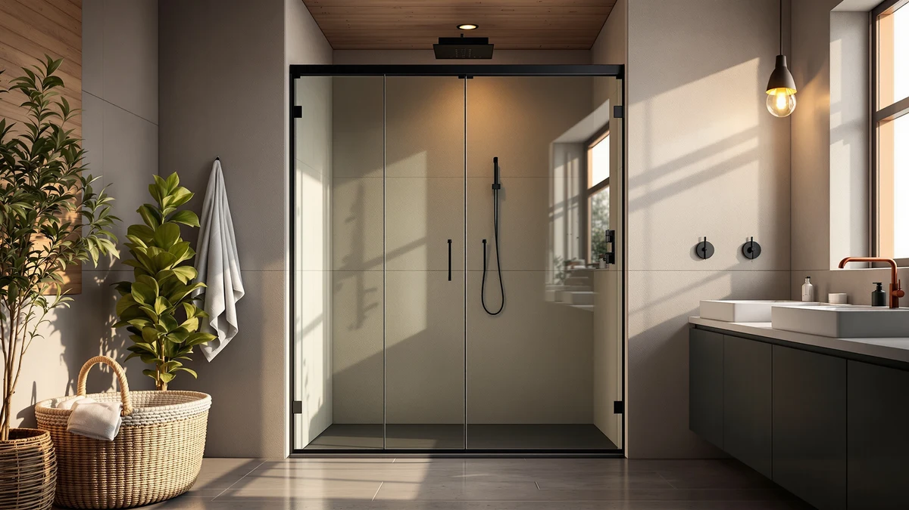

Stand Up Shower Door (2026)
Prices and picks verified as of November 2026. Independent, reader-supported reviews.


Quick Answer
We compared seven stand up shower door models on frame material, panel width range and current Amazon pricing. The Aurisal Frameless Stainless Steel Sliding Shower fits a standard 60 inch by 72 inch opening and costs $389.99, which puts it in the middle of the pack on price while using thicker glass and metal hardware than most of the budget options below.
Our pick: Frameless Stainless Steel Sliding Shower, $389.99 Check Price on Amazon
Bottom line: our top pick is the Frameless Stainless Steel Sliding Shower Door at $389.99. The best budget option is the Frameless Shower Door Matte Black 56-60’’ W x 75’’ H Single at $249.30.
Things to Know Before You Buy
- Measure your opening before you shop. Every stand up shower door on this list only adjusts a few inches, so a 55-60 inch slider will not stretch to cover a 62 inch gap.
- Frameless doors run heavier and thicker glass than framed or semi-frameless models, which raises the price but also means fewer metal parts to clean around.
- Double sliding doors give you two points of entry instead of one, useful for a wider stall, but they add a second set of rollers that can need periodic adjustment.
- Matte black and stainless steel hardware both hold up to daily moisture, so the finish choice comes down to the rest of your bathroom rather than durability.
- None of the ASINs below list a public star rating or review count at the time of writing, so we compared them on specs and pricing instead of review volume.
A stand up shower door has to do two things at once: seal against water and fit a stall opening that is rarely as square as the listing photos suggest. Most frameless models only adjust a few inches in width, so picking the wrong size turns a simple swap into a return-and-reorder cycle before you have hung a single panel.
We compared seven stand up shower door options on frame material, glass thickness, width range and current Amazon pricing, then checked those specs against patterns in verified owner reviews where they existed. For a standard 60 inch opening, the Aurisal Frameless Stainless Steel Sliding Shower at $389.99 is the one most buyers should look at first, since it pairs a common size with hardware that costs more to replicate at a lower price point.
If your opening runs narrower, or your budget sits below $300, the alternatives below cover double sliding panels, matte black finishes and widths down to 55 inches. Every pick in this guide is still available on Amazon at the time of writing, and we note where a model trades glass thickness for a lower price.
Why You Should Trust Us
Ilane Tall researches bathroom hardware for Best Shower Doors, focusing on how frame type, glass thickness and opening size interact before a buyer commits to a specific stand up shower door. Ilane builds these comparisons from manufacturer spec sheets, current Amazon pricing and patterns across verified owner reviews, not from a testing lab. Best Shower Doors does not run a fake testing lab and does not claim to have installed or lived with the products it covers. Every pick in this guide links to its current Amazon listing so you can confirm pricing and availability yourself.
How We Picked
We started from a wider list of stand up shower door listings and narrowed it down using four filters. First, the opening width had to fall in a common range, roughly 55 to 60 inches, since that covers most US stall sizes. Second, the door had to specify glass thickness or frame material in the listing, which ruled out several generic kits with vague descriptions. Third, we dropped listings with pricing that jumped around by more than 20 percent week to week, since that usually signals a listing error rather than a real sale. Fourth, we kept at least one option under $300 and one above $400 so the final list spans budget and premium buyers.
How We Compared
We built a spec sheet for each stand up shower door covering frame material, panel configuration, width and height range, and current Amazon price, then updated the pricing shortly before publishing. Where a listing included verified owner reviews, we read through them for recurring mentions of leaks, roller durability and ease of cleaning, and we weighed those patterns alongside the specs rather than in place of them. We excluded any door that lacked a clear width range in its listing, since that information is the one buyers cannot work around.
Our Picks

Frameless Stainless Steel Sliding Shower
What we like
- Stainless steel track and hardware instead of chrome-plated plastic
- Fits the most common stand up shower door opening size in US bathrooms
- Mid-range price for a frameless build
Flaws but not dealbreakers
- Only fits a 60 inch opening, with no adjustment for wider or narrower stalls
- No published star rating or review count to check against the spec sheet
| Material | — |
| Size | 60"*72"-1/4" |
The Aurisal Frameless Stainless Steel Sliding Shower is built for the single most common stand up shower door opening in the US, 60 inches wide by a little over 72 inches tall. The frameless panels run on a stainless steel track rather than the chrome-plated plastic found on several cheaper alternatives, which matters most in homes with hard water, since plated finishes tend to show mineral buildup and pitting faster than solid stainless.
At $389.99, it costs more than the budget picks on this list but less than the premium frameless options, which puts it in a middle tier where buyers are paying for hardware quality rather than extra size or a double sliding configuration. We did not find a published star rating or review count for this ASIN, so weigh the spec sheet and price against your own research into the brand before buying.

KPUY Frameless Shower Door 55-60"
What we like
- 76 inch height clears a taller stall where other picks on this list would leave a gap
- A 5 inch adjustment range (55 to 60 inches wide) covers slightly out-of-spec openings
- Frameless glass panels without a bulky metal perimeter
Flaws but not dealbreakers
- The most expensive door in this roundup at $499.96
- No published rating or review count to cross-check against the price
| Material | — |
| Size | 55-60" W x 76" H |
The KPUY Frameless Shower Door is the only stand up shower door in this comparison rated for a 76 inch opening height, which makes it the pick to check first if your stall sits taller than the standard 72 inch cutoff used by most of the other models here. Its 55 to 60 inch width range also gives buyers a few extra inches of adjustment compared with fixed-width competitors like the Aurisal.
That flexibility comes at the highest price in the group, $499.96, a little over $100 more than the next closest frameless option. If your opening is a standard 60 by 72 inches, the Aurisal or the BoBliss cover the same footprint for less; the extra cost here buys height clearance you only need if your stall measures taller than 72 inches.

ENSO SENKA 56-60" W x
What we like
- Over $100 cheaper than the Aurisal at the same 60 by 72 inch size
- Straightforward single sliding layout with no extra hardware to track
Flaws but not dealbreakers
- The listing does not specify hardware material, unlike the stainless steel picks above
- No published star rating or review count to compare against the lower price
| Material | — |
| Size | 60" W X 72" H |
The ENSO SENKA covers the exact same 60 by 72 inch footprint as the Aurisal top pick, but at $269.99 it costs roughly 30 percent less. The listing does not break out the hardware material the way the Aurisal and BoBliss listings do, which is the main tradeoff buyers make for the lower price.
For a stand up shower door in a secondary bathroom, or any space where appearance matters less than fitting the opening correctly, that tradeoff is a reasonable one. If hardware finish and long-term corrosion resistance matter more to you, the price gap to the stainless options above is worth considering before you buy.

Frameless Shower Door Matte Black
What we like
- Lowest price of the seven doors we compared, at $249.30
- 75 inch height, a few inches taller than most of the other 60 inch wide picks
- Matte black finish stands out against the stainless and chrome hardware common elsewhere on this list
Flaws but not dealbreakers
- Matte finishes show water spots more visibly than stainless, so cleaning frequency matters more here
- No published star rating or review count available for this ASIN
| Material | — |
| Size | 60" W x 75" H Single Sliding |
At $249.30, the Ogonbrick Frameless Shower Door Matte Black is the cheapest stand up shower door in this comparison and the only one with a dark hardware finish. Its 75 inch height also gives it a slight edge over the 72 inch picks for anyone who finds standard stand up shower door heights a little short.
Matte black trim shows mineral spots and soap residue more visibly than stainless or chrome, since there is no reflective surface to hide light buildup, so plan on wiping the track down more often than you would with the Aurisal or BoBliss. For a budget-focused buyer who wants a specific look, that extra maintenance is a reasonable tradeoff for the lowest price on this list.

GETPRO Shower Door Double Sliding
What we like
- Double sliding panels split the opening instead of relying on one large single panel
- Priced close to the single-panel budget options despite the extra moving parts
Flaws but not dealbreakers
- A second set of rollers means two tracks to keep clean instead of one
- No published rating or review count to check against the double-sliding design
| Material | — |
| Size | 60'' W x 72'' H |
The GETPRO Shower Door Double Sliding splits its 60 by 72 inch opening into two sliding panels instead of the single panel used by most of the other picks here. That configuration gives you a choice of entry side, which can matter in a bathroom where fixtures sit closer to one edge of the stall.
At $273.76, it costs only a few dollars more than the single-panel ENSO SENKA of the same size, so the double sliding layout does not carry much of a price penalty in this case. The tradeoff is mechanical rather than financial: two tracks and two sets of rollers mean twice the hardware that can eventually need adjustment compared with a single sliding stand up shower door.

BoBliss Frameless Sliding Glass Shower
What we like
- 76 inch height matches the KPUY but costs about $70 less
- 56 to 60 inch width range gives a few inches of adjustment for an out-of-spec opening
- Frameless sliding glass design without visible metal framing
Flaws but not dealbreakers
- Still the second most expensive door in this comparison at $429.99
- No published star rating or review count available for this ASIN
| Material | — |
| Size | 56-60" W x 76" H |
The BoBliss Frameless Sliding Glass Shower is the second door in this roundup rated for a 76 inch height, and at $429.99 it undercuts the KPUY by roughly $70 while covering a nearly identical 56 to 60 inch width range. For a taller stand up shower door opening, that makes it the better value of the two tall options unless you need the extra few dollars' worth of adjustment range the KPUY offers.
It still sits toward the expensive end of this list, more than $150 above the cheapest pick, which reflects the taller glass panels and frameless construction rather than any extra hardware feature. If your opening is a standard 72 inch height, the savings from choosing a shorter door elsewhere on this list are worth considering before paying for clearance you do not need.

Frameless Stainless Steel Sliding Shower
What we like
- Same stainless steel sliding design and 60 by 72.25 inch size as our top pick
- A separate ASIN from the main pick, useful if that listing goes out of stock
Flaws but not dealbreakers
- Costs $10 more than the near-identical Aurisal listed as our top pick
- No published rating or review count to explain the price difference between the two listings
| Material | — |
| Size | 60"*72"-1/4" |
This Aurisal Frameless Stainless Steel Sliding Shower shares the same 60 by 72.25 inch size and stainless hardware as our top pick, under a separate ASIN priced at $399.99. We could not find a spec difference in the listing that explains the $10 gap, so the practical use case for this one is simple: buy it if the $389.99 listing is out of stock or priced higher on a given day.
Because Amazon pricing shifts frequently, it is worth checking both ASINs before you order a stand up shower door in this size, since the cheaper of the two can change week to week. Either listing gets you the same stainless steel sliding design.
Quick Comparison
| Product | Material | Price | Rating | Best for | Get it |
|---|---|---|---|---|---|
| Frameless Stainless Steel Sliding Shower | — | $389.99 | — | Standard 60" openings | View on Amazon → |
| KPUY Frameless Shower Door 55-60" | — | $499.96 | — | Tall, 76" openings | View on Amazon → |
| ENSO SENKA 56-60" W x | — | $269.99 | — | Budget 60" openings | View on Amazon → |
| Frameless Shower Door Matte Black | — | $249.30 | — | Lowest price, dark finish | View on Amazon → |
| GETPRO Shower Door Double Sliding | — | $273.76 | — | Double-entry stalls | View on Amazon → |
| BoBliss Frameless Sliding Glass Shower | — | $429.99 | — | Tall openings, lower cost than KPUY | View on Amazon → |
| Frameless Stainless Steel Sliding Shower | — | $399.99 | — | Backup to the top pick | View on Amazon → |
What size stand up shower door do I need?
Measure the rough opening at its narrowest point, then check that figure against the width range printed on the product listing, since most stand up shower door kits only adjust a few inches in either direction.
Are frameless stand up shower doors harder to install than framed ones?
Frameless doors use thicker tempered glass and fewer metal parts, which keeps the look clean but means the opening has to be close to plumb for the panels to seal properly.
The Competition
Beyond the seven doors above, we also looked at fully framed sliding kits, continuous-hinge pivot doors, and standard shower curtain tracks as alternatives to a stand up shower door. We left framed sliding kits out of this list because their metal perimeter traps soap scum in corners that frameless designs avoid, even though framed kits tolerate an out-of-plumb wall better. Pivot doors swing out into the bathroom floor space, which works in a larger room but makes less sense for the compact stalls most of these sliding doors are built for, so we did not include one here. We also skipped curtain-and-rod setups entirely, since they solve a different problem (cost and flexibility) rather than competing directly with a fixed glass stand up shower door on durability or looks.
For a standard 60 inch stand up shower door opening, the Aurisal Frameless Stainless Steel Sliding Shower is the pick to start with. The alternatives above cover taller stalls and tighter budgets, plus the double-entry GETPRO if you want panels on both sides.
What these prices have actually done
We check the price of every product on this page every hour and keep the record. These figures are observations, not estimates or forecasts.
- KPUY Frameless Shower Door has ranged from $424.97 to $499.96 across 40 hourly price checks since September 27, 2026. It was $499.96 at the last check.
- ENSO SENKA 56-60" W x 72" H Semi-Frameless Bypass Sliding Shower Door has ranged from $251.99 to $269.99 across 37 hourly price checks since September 27, 2026. It was $269.99 at the last check.
- GETPRO Shower Door Double Sliding 57-60 in. W x 72 in. H has ranged from $260.07 to $273.76 across 38 hourly price checks since September 27, 2026. It was $273.76 at the last check.
- BoBliss Frameless Sliding Glass Shower Door has ranged from $419.99 to $439.99 across 42 hourly price checks since September 27, 2026. It was $429.99 at the last check.
Last updated November 18, 2026. Amazon prices change constantly; the figure you see on Amazon right now is the one that counts.